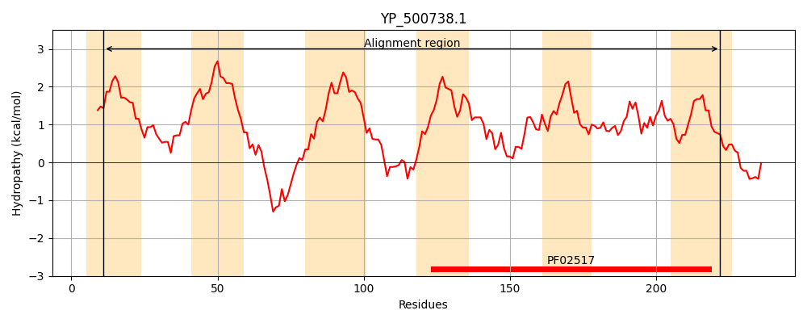
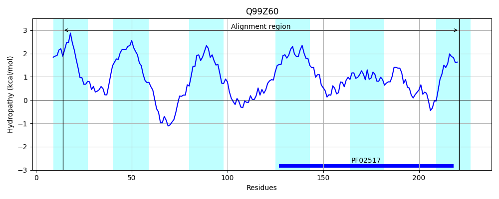
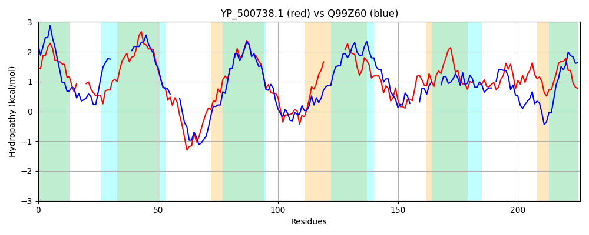

Hit Accession: Q99Z60
Hit TCID: 9.B.2.1.10
Hit Description: gnl|BL_ORD_ID|17694 gnl|TC-DB|Q99Z60|9.B.2.1.10 Putative uncharacterized protein OS=Streptococcus pyogenes serotype M1 GN=SPy_1384 PE=4 SV=1
Mach Len: 226
e:0.000000
Query TMS Count : 6
Hit TMS Count: 6
TMS-Overlap Score: 5.150000
Predicted Substrates:None
BLAST Alignment:
Score: 182 , Bit scores: 74 bits, E-value: 3.4e-16, Alignment length: 226, Percentage identity: 28
Query: 11 VIIYILSQFLPLLIVKK---LPFVQYSGIELTKAVIYIQLVLFLIAATTIILINLKIKNPTKLELEVKEPKKYIIPWALLG-FALVMIYQMVVSIVLTQIYGGQQVSPNTEKLIIIARKI--------PIFIFFVSIIGPLLEEYVFRKVIFGELFNAIKGNRIVAFIIATTVSSLIFALAH--NDFKFIPVYFGMGVIFSLAYVWTKRLAVPIIIHMLQNGFVVI 222
+I+ ++ LP+++++K +P V GI + L ++ + I+L L K + +K+ K ++ W L F L++ +V ++ Q++ GQQVS N + +AR I +F+ ++ I P++EE VFR +LF KG + +A V+SL+FAL H N +FI +Y MG+ +AY L I++H+ N VI
Sbjct: 14 IILAMVFNVLPMILLQKQHDIPMVLNWGIGI--------FYLVIVGSVLIVLWGLY---QAKQDTFIKQQKMRLVDWGYLALFWLIIRVIAIVGTLVNQLWSGQQVSANDAAIHTLARLIKGGFPLYTALFVLVIAFIAPIMEELVFRGFPMIDLF---KGKSLK---VAGLVTSLVFALPHATNSVEFI-MYSCMGIFLFVAYQRRGNLKDAILLHIFNNLIEVI 221 | Protein Hydropathy Plots: |
|---|
|  |  |
Pairwise Alignment-Hydropathy Plot:
|
|---|
|  |